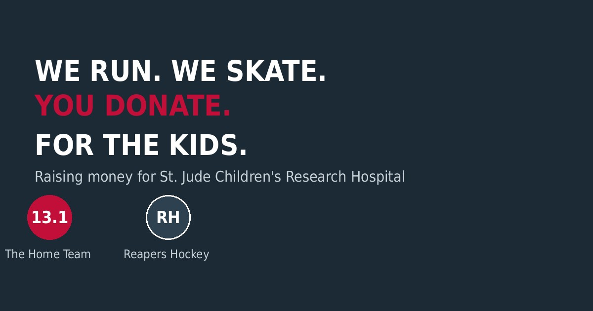
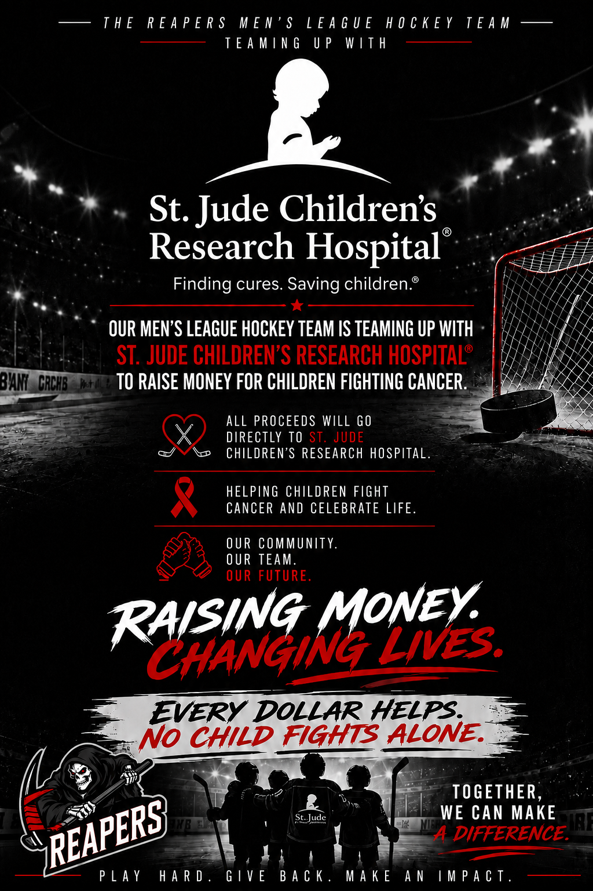
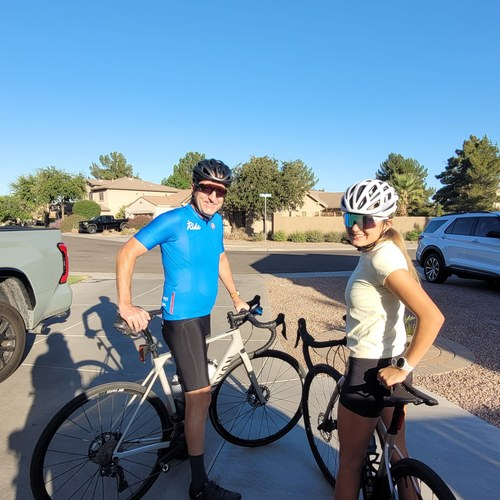
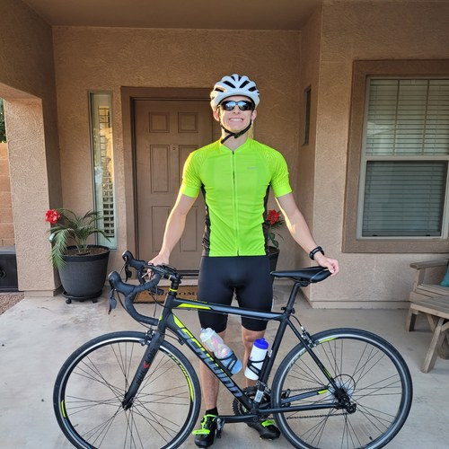
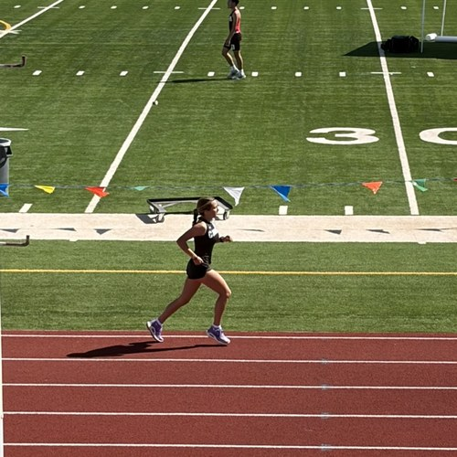
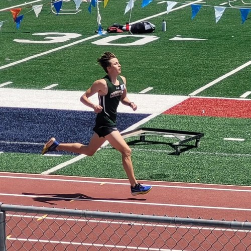
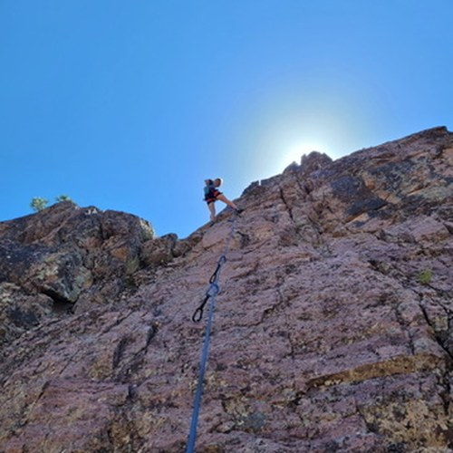

Raising Money for St. Jude
This January, a half marathon. All season, a hockey team. Every mile logged. Same cause: St. Jude — for kids who need St. Jude the most.
Mile-funded amounts are sent to St. Jude periodically and may not yet be reflected in their official total.
Donate to St. JudeAsk your employer if they match charitable donations — you could double your impact.
Who's raising funds
Time to Reap for a Reason
RH Reapers Hockey
A team named after death raising money to fight it. This season, the Reapers' team fee goes straight to St. Jude instead of the usual costs. Creative in-game fundraising (penalties, goals, and a few inside jokes) keeps the mission alive all year. The Reaper stands for cancer — and these kids are slaying it.
Reapers adult league ice hockey team · AZ Ice Gilbert
Donate to St. Jude
Reapers Giving Back Challenge
$5 Donations
- Missed wide-open scoring chance
- Player falls on their own
- Hits the post
- Puck over the glass
- Called for penalty
- Scythe Award winner
$10 Donations
- Own goal
- Missed game (excluding emergencies)
- Lowest goal scorer on the season
- Lowest assist total on the season
- Lowest point total on the season
- Most penalty minutes on the season
$25 Donations
- Don't attend "team chemistry building activity" — AKA bar after the game. (Gotta stay for at least 1!)
$50 Team Donations
- Lose a game
- Challenge our opponents to donate if they lose to us
- We get shutout
- We get scored on 6+ goals
Fan Support
- Come support "your player" and match his game donation total!
Rock 'n' Roll Arizona Half Marathon · Jan 17, 2027

13.1 The Home Team
It started with a deal: we run a half marathon together, we take on a cycling event together. That promise grew into something bigger — now we're all in for St. Jude.
Serven · Eunice · Dylan · Taylor
Donate to St. JudeEvery mile counts
In motion





Thank you for reading, for sharing, for showing up for these kids.For the kids.
Want to get involved beyond a donation? Reach out to any of us — we'd love the help.